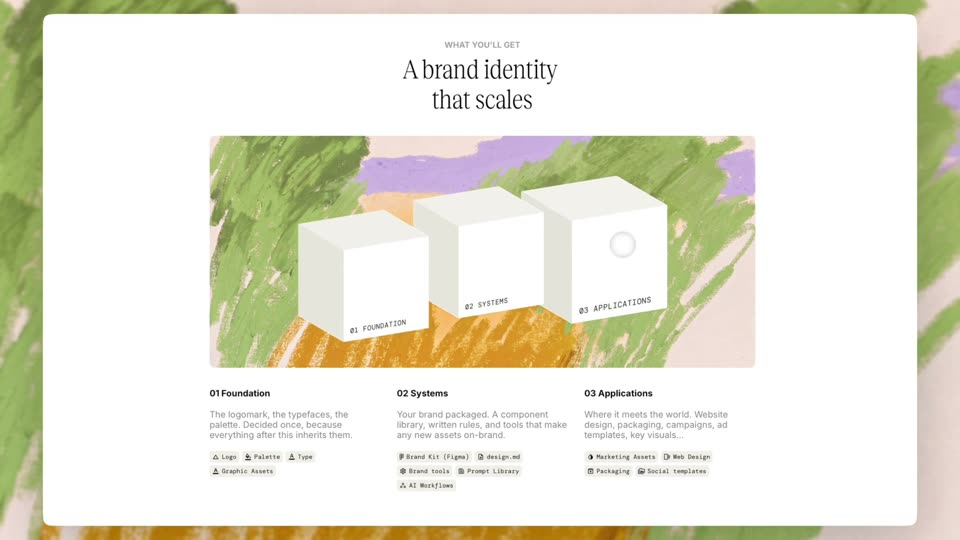
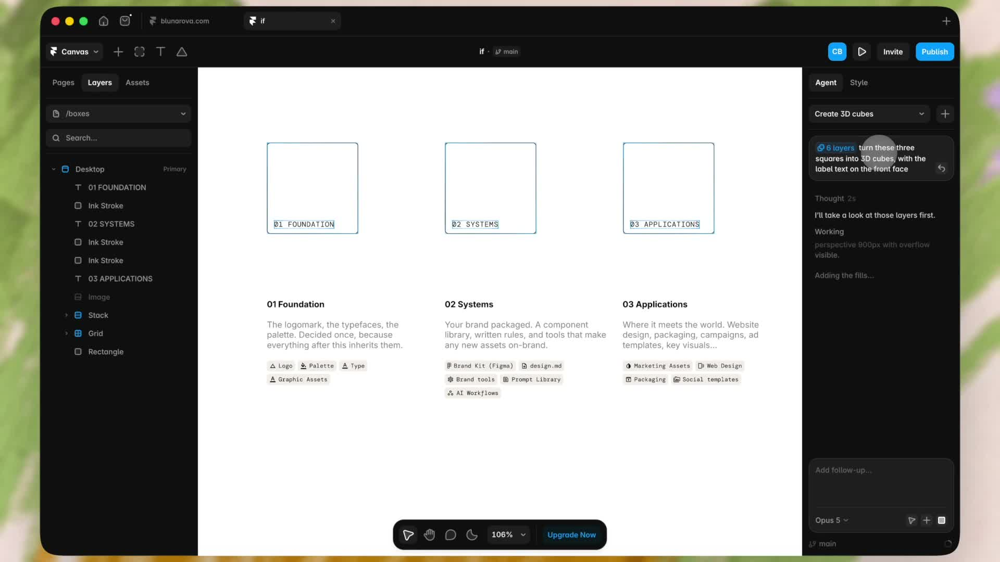

三枚正方形先画出线框，再按正面、侧面、顶底填色，变成立方体。标签贴在正面，跟着走。
What you’ll get
The logomark, the typefaces, the palette. Decided once, because everything after this inherits them.
Your brand packaged. A component library, written rules, and tools that make any new assets on-brand.
Where it meets the world. Website design, packaging, campaigns, ad templates, key visuals.
白卡片。标题衬线。下面一块油画底上立着三枚立方体，正面分别写 01 FOUNDATION / 02 SYSTEMS / 03 APPLICATIONS。六个面是真的，标签在正面上，立方体一动字跟着走。
原帖是 Framer Agent 的操作录像。本页不收编辑器壳。发明是立方体本身：从正方形到体积，再错相漂浮。

CSS transform-style: preserve-3d。三枚立方体共用同一组转角 rotateX(-26deg) rotateY(-38deg)，正交等轴，没有透视缩短。原制作里写过：perspective 关掉，共用底边。
建造按叙事走。01 先到，然后 02，然后 03。每一枚先只显示正面（正方形），再转到体积并露出线框，然后按正面与背面 → 两侧 → 顶与底填色。三枚都站稳之后，才开始沿 Y 轴循环。时长 2.4s / 3s / 3.8s，中间一枚反向，所以永远对不齐。
悬停把立方体从漂浮里抬起并放大。弹簧在 .lift 上，不和漂浮抢同一层 transform。标签是正面的子元素，不另做位移。

| 项目 | 取值 |
|---|---|
| 边长 | 148px。半深 74px，六个面 translateZ(74px) |
| 转角 | rotateX −26° / rotateY −38°。三枚相同 |
| 描边 | 1px #17181a |
| 填色顺序 | front+back → left+right → top+bottom |
| 入场间隔 | 每枚错开 520ms。填色步 160ms |
| 漂浮 | translateY 0 → −22px，2.4 / 3 / 3.8s，中间反向 |
| 悬停 | 抬起 22px，scale 1.06，420ms cubic-bezier(.22, 1.12, .36, 1) |
#fieldrotateX(-26deg) rotateY(-38deg)，无透视缩短。边长 148px，描边 1px。标签是正面子元素。#build.is-drift。#driftanimation-direction: reverse。悬停在 .lift：抬起 22px、scale 1.06、420ms 弹簧。减少动态效果时停漂浮。